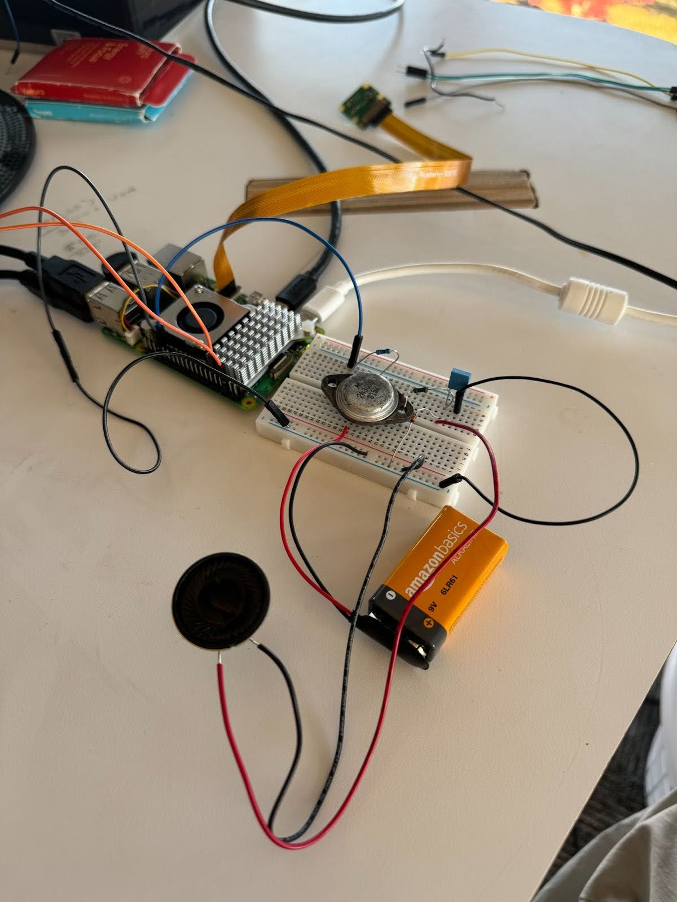

Electrical Components Overview
This section covers all the electrical components used in the project, including sensors, actuators, and displays, each with its own detailed description.
Touch Sensor

The touch sensor is another way of detecting user input. It plays a crucial role in allowing interaction with the system without relying on the voice asisstant. We used the KeyeStudio touch sensor for this helmet. To hook up the touch sensor, we connected its V pin to the Arduino's 5V pin, G pin to the Arduino's GND, and the S pin to digital pin 3.
Servos

Servos are used for precise control of mechanical components, allowing for movement in response to user input or commands. In development for our first few sprints, we used small servos that struggled to lift the weight of the cantilevered mask. For the final helmet, we swapped to larger servos. These servos were crucial because of their high precision, allowing us to make sure they could actuate the mask together despite facing opposite directions. The wiring for these servos consisted of connecting its power pin to the Nano's 5V, the GND pin to the Nanos' GND, and the signal pin to digital pins 6 and 7.
Microphone

The microphone captures audio input from the environment. It is an essential part of any voice interaction system, enabling the project to respond to sound and spoken commands. To minimize space, we used a mini USB microphone plugged directly into the Raspberry Pi 5's USB port.
Camera

The camera is used for visual input. It is critical for tasks that involve image processing or visual recognition, enabling the system to "see" its surroundings. For the sake of this project, we strictly used the camera to take and save photos to a folder stored on our Raspberry Pi 5. With more time, we'd love to expand on the capabilityies of the PiCamera v2. To connect up the camera, we attached it to one of the ribbon cable ports on the Raspberry Pi.
Speaker
The speaker allows the system to output sound, such as voice feedback or alerts, creating an interactive experience with audio cues.
OLED Display

The OLED display is used to provide visual feedback to the user. It can display text, icons, or images that are important for the operation and status of the system. We wired up digital pin 5 and 5 from our Arduino Nano into the SDA and SCK pins of the OLED display respectively while providing the Nano's 5V into it's VCC pin and connecting it's GND pin to the Nano's GND.
Firmware
The firmware controls the interaction between the electrical components and the rest of the system. It is responsible for reading data from sensors, processing it, and controlling actuators like our servos. The firmware is developed in both Arduino and Python, and it manages the communication between each component and our microcontrollers (Arduino Nano, Raspbbery Pi 5).
Key functionalities of the firmware include:
- Sensor data acquisition (e.g., touch sensor, microphone)
- Control of output devices (e.g., servos, OLED display, speaker, camera)
- Real-time decision-making and response handling
- Communication with the system's Python-based software
For the majority of our components, we were able to centralize all its firmware in the JarvisArduino.ino file which we uploaded to our Arduino Nano. The Nano connected the servos, display, and touch sensor together. On the other hand, for our camera, microphone, and speaker, which were all connected to our Raspberry Pi 5 instead, we were able to abstract out much of the firmware; the microphone was automatically recognized by the Raspberry Pi 5 and accepted without any additional configuration after plugging it into one of the Pi's 4 USB ports. Additionally, for the sake of audio quality, we decided to use a bluetooth speaker over a wired one. Therefore, after configuring the bluetooth once with the Pi upon setup, we could rely on the bluetooth speaker syncing whenever they were both powered on. Lastly, for our PiCamera v2, we ended up using a roundabout way to program its firmware. There exists two libraries to assist in using the PiCamera v2: the libcamera and picamera2 libraries. However, after all sorts of debugging with these libraries, we could not use the standard Python syntax:
from picamera2 import Picamera2, Preview
import time
picam2 = Picamera2()
camera_config = picam2.create_still_configuration(main={"size": (1920, 1080)}, lores={"size": (640, 480)}, display="lores")
picam2.configure(camera_config)
picam2.start_preview(Preview.QTGL)
picam2.start()
time.sleep(2)
picam2.capture_file("test.jpg")
to function properly. Instead, we used the built-in Python subprocess module to run bash commands from within our Python script--which opened the door for the semi-working libcamera Linux software. Using libcamera, we could use the libcamera-still command that can take pictures from a preview using the command line. However, we were dealing with an error on the Raspberry Pi 5 that required us to pass in the --qt flag alongside this libcamera command. Fortunately, python's subprocess module has an easy way to add flags to bash commands:
subprocess.run(
[
"libcamera-still",
"-o",
f"images/{now:%Y-%m-%d %H:%M}.jpg",
"--qt",
]
)
To have a better insight on other metadata we can incorporate into our images, we used the built-in Python datetime module that helps us get the current time in Python. We stored each image with the name of the time the picture was taken. Those % indicators are flags that track the year, month, date, hour, and minute the photo was taken. This PiCamera firmware was baked into our Python software file, triggered by the voice assistant.
Finally, to handle communication between our Arduino JarvisArduino.ino file and our Python jarvis_v3.py file, we used a two-way serial connection. Configuring each file to begin its serial on 9600 baud, we had the Python software file that leveraged the voice assistant print messages on the serial like "<Activate Jarvis>", "<Open Helmet>", "<Close Helmet>" etc. All the while, the Arduino file would be listening in on the same baud rate for any serial messages that come in. If the Arduino recognized these strings, it would update variables that would then lead to actuation of servos, displaying animations on the OLED, etc.
For a deeper look at the firmware code, visit the JarvisArduino.ino file in our GitHub repository to view the source code.